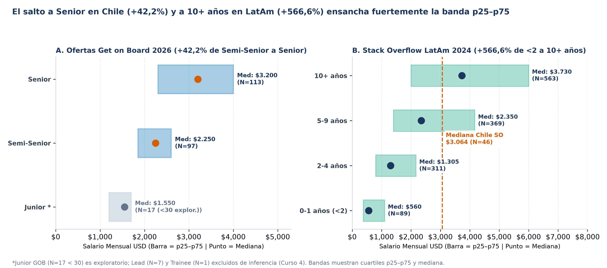
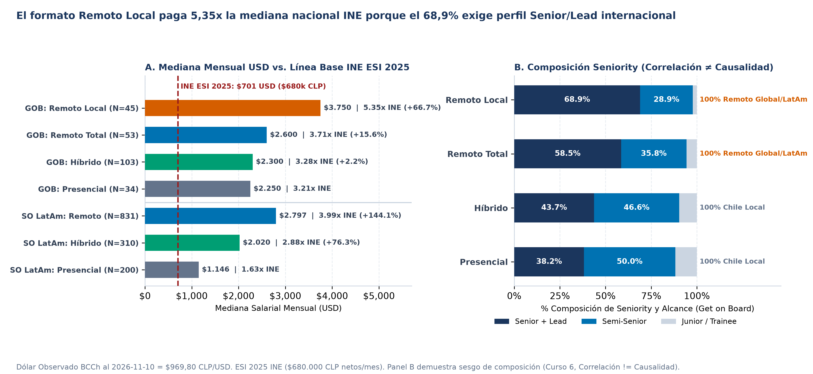

Patrones Descubiertos en el Mercado Tech
Visualizaciones construidas con alta proporción datos-tinta, accesibilidad cromática para daltonismo y ejes honestos que parten desde cero.

Solo 5 Tecnologías Superan el Umbral Crítico del ≥ 20%
Al analizar 679 vacantes vigentes en Get on Board (2026) y 31.759 menciones de habilidades, únicamente SQL (32,84%), AWS (30,04%), Python (28,42%), JavaScript (27,39%) y Microsoft Azure (20,77%) superan la meta del 20%. Destaca la brecha positiva de Azure (20,77% demanda vs. 15,04% adopción en Stack Overflow Chile), reflejando una oportunidad inmediata de formación.

Primas Salariales Cloud: AWS, Azure y Google Cloud
SQL ofrece el mayor volumen de entrada pero marca el piso salarial ($2.250 USD mediana GOB / $2.051 USD SO LatAm). En contraste, las tecnologías Cloud impulsan una prima salarial de +23,3% a +31,5%: AWS alcanza $2.850 USD en GOB ($2.697 USD en SO), Google Cloud $2.825 USD ($2.614 USD en SO) y Azure $2.775 USD ($2.684 USD en SO).

Salto de +42,2% al Nivel Senior y Bandas Cuartílicas p25–p75
En Get on Board, el paso de Semi-Senior ($2.250 USD, N=97) a Senior ($3.200 USD, N=113) representa un aumento del +42,2% en la mediana salarial. Ambos segmentos cumplen rigurosamente N >= 30, permitiendo fijar bandas salariales confiables: Semi-Sr $1.850–$2.600 USD y Senior $2.300–$4.000 USD. En Stack Overflow LatAm, la progresión entre los 4 tramos con N >= 89 crece de forma continua y ascendente (+566,6% acumulado).

La Paradoja del Remoto Local: Sesgo de Composición
Las vacantes etiquetadas como 'Remoto Local' en Get on Board pagan $3.750 USD/mes (5,35x la mediana nacional INE ESI 2025 de $701,18 USD y +66,7% sobre Presencial $2.250 USD). Sin embargo, el análisis relacional Q12 prueba que no es la modalidad lo que genera el sueldo, sino la composición del cargo: el 100% de estas ofertas corresponde a alcance Remoto Global/LatAm y el 68,9% exige perfiles Senior o Lead.

Chile es 2° Regional en Salarios Tech y Prima de Grandes Empresas
Entre los 7 países de Latinoamérica que cumplen N >= 30 en Stack Overflow 2024, Chile ocupa el segundo puesto regional ($3.063,54 USD/mes, N=46) solo por detrás de Uruguay ($6.416,42 USD, N=36, impulsado por exportación de software a EE.UU.). Además, en LatAm las empresas grandes (1.000+ colaboradores, $2.784,92 USD) pagan +54,8% más que las pequeñas (1–99 colaboradores, $1.799,16 USD), con un pico salarial en el tramo de 500–999 empleados ($3.532,67 USD).